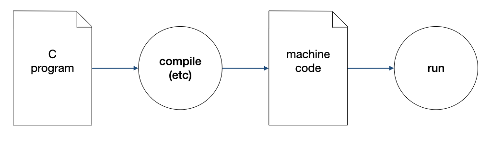
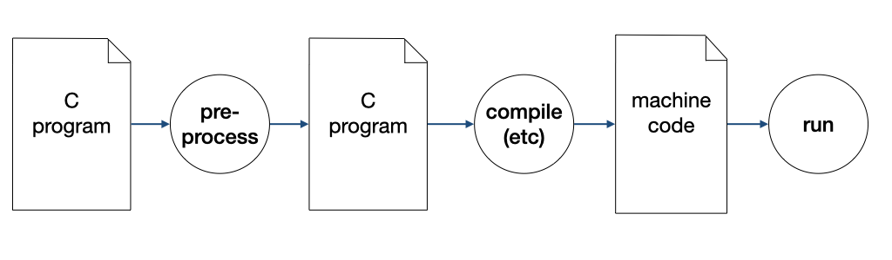

Unit 20: C Preprocessor: Constants and Macros
Learning Objectives
After this unit, students should:
- understand how the preprocessing step in the compilation pipeline works
- understand how #include statements work
- understand why we should avoid hard-coding magic constants and start having the habit of using
#defineto define constants in their code. - understand how
#definecan be used to define macros - be able to explain the differences between macros and functions
- be able to write macros in a way that avoid the common pitfalls
Revisiting C Compilation Process
In this unit, we are going to delve deeper into the C compilation process, focusing on a step called pre-processing. This step is usually the first step in the compilation process. In the first lecture, we lumped this process under compile (etc) in the figure below.

We can now separate one of the steps under "etc" as the pre-processing step,

Preprocessing
Preprocessing is, in essence, a text processing and substitution process, and so it is not specific to C. In C, this process is used to implement, among other things: (i) file inclusion, (ii) macro, and (iii) conditional compilation.
A C pre-processor processes all the lines in the input file that start with a # character. Any line that starts with # is a preprocessor directive. You have seen two of such directives, #include to include a file, and #define to define a constant.
#include
The #include directive has the format
1 | |
1 | |
When the C pre-processor sees this directive, it reads the file specified by the given filename, and inserts the text, line-by-line, from this file, into the current file, in the location where the line #include occurs. Any C preprocessor directive in the included file is recursively processed.
#define Constant
We have seen how we can use #define to define constant values in our code in our exercises and assignments. For instance, in Exercise 2, rectangle.c, you have seen:
1 2 3 4 5 6 | |
What is the advantage of using TOP_LEFT (which is 8 characters) instead of just one character ╔?
It is a good programming practice to avoid hardcoding constant values (also called magic constants) in our code so that our code can be easily changed when the requirement of our program has changed. Defining these constants as #define allows us to easily modify our program. For instance, suppose that we wish to change the way we draw the rectangle. Instead of
1 2 3 4 5 6 | |
We wish to draw it like this:
1 2 3 4 5 6 | |
All we have to do is to change the defined constants:
1 2 3 4 5 6 | |
We do not have to make any changes to the code to draw the rectangles! This reduces the chances that you introduce bugs into the code.
Let's consider the second example, taxi.c from Assignment 1:
1 2 3 4 5 6 7 8 9 10 11 12 13 14 15 16 17 18 19 20 21 22 23 | |
In the snippet above, there are many hard-coded values. Suppose one day, the taxi fare changes (and that day will come). Perhaps the base fare is more, perhaps the distance threshold is shorter. We will have to change the code above to calculate the new fare. By littering the code above with hardcoded values, the code is difficult and error-prone to change.
You might think that we can just search and replace to update the code when the fare changes. But this is error-prone as well! Suppose that the taxi fare increases to $0.25 per 350m after 10km, but remains $0.22 between 1 - 10km, then we cannot just replace every occurrence of 0.22 with 0.25.
We can make our code "future-ready" by abstracting out all the magic numbers and defining constants for each of them.
1 2 3 4 5 6 7 8 9 10 11 12 13 14 15 16 17 18 19 20 21 22 23 24 25 26 27 28 29 30 31 32 | |
Replacing the magic numbers with constants make the code a bit harder to read, but now, it is super easy to change. Suppose, one day, the base taxi fare is increased to $3.40, and then $0.20 per 500m subsequently up to 10km, and $0.15 per 600m thereafter, we only need to change:
1 2 3 4 5 6 7 | |
The logic of the code remains the same.
How does the C pre-processor process the #define directive? When we write a #define directive, the directive should be followed by an identifier and a token. The token may contain space but must be terminated _by a new line. In the example above, BASE_FARE is the identifier, and 3.40 is the token.
When the C pre-processor sees the #define directive, it replaces all instances of the identifier in the file with the token. This is merely a text substitution operation.
The #include Directive
Another commonly used directive is #include. You have seen how we used this to "import" the cs1010.h, stdbool.h, math.h, etc. When we introduced this at the beginning of the lecture, we compared this to the import require, use commands seen in other programming languages. But the mechanism for #include is very different from the others.
The #include directive merely performs text substitution -- it recursively reads the lines from the included file and inserts them into the location where the #include directive is.
Consider the example below. Suppose we have three files:
1 2 3 4 5 6 7 8 9 10 | |
1 2 3 4 5 6 | |
1 2 3 4 5 | |
Let's see what happens when we run C pre-processor on the file a.c. We can ask clang to stop the compilation process after the pre-processing phase, using the flag -E1.
1 | |
The command will produce the output after C pre-processing:
1 2 3 4 5 6 7 8 9 10 11 12 13 14 15 16 | |
The lines that start with # are metadata meant for the compiler. If we ignore those, we can see that the file a.c has been expanded into
1 2 3 4 5 | |
Line 1 above is included from file c.h, which in turn is included from file b.h. The C pre-processor also substitutes the text PI with the text 3.1415926, as the identifier PI is defined in b.h.
In C, we usually use #include to share common function declarations and constants.
#define Macro
The #define directive can be used for a more flexible and powerful text substitution feature called macro. A macro is a block of code that is given an identifying name and is substituted and expanded during pre-processing.
For instance, we can write the following:
1 | |
This macro is named SQUARE, just like a function we defined in Lecture 3 and it takes in a parameter x as well. But that's where the similarity ends. There are a few important differences between macros and functions in C:
- Macros are not called. They are only substituted during the preprocessing phase which performs text processing on the source code.
- Macros have no information about types. It has no return type and the parameters have no type.
Take the example below. The file:
1 2 3 4 5 6 7 | |
Get expanded into:
1 2 3 4 5 | |
Let's look at another example. We have seen how to write a function that swaps two of the value of variables. The one we wrote swaps two double. If we want to swap two long, or two char *, etc, we will need to write a new function for each one.
Let's write a generic macro that does swapping for any type.
1 2 3 4 5 6 7 8 9 10 11 12 13 | |
The macro SWAP takes in three parameters, the first is the type T, the second and the third are the variables to be swapped. This macro definition spans multiple lines. Since C preprocessor ends the definition of a macro with the end of the line, we add a backslash character to "escape" the newline, telling the preprocessor not to treat the newline as the end of the macro definition.
The code above gets expanded to:
1 2 3 4 5 6 | |
You might be bothered by the appearance of { and } on Line 5. But note that this is perfectly valid syntax. Recall that we said { and } defines a block, while we commonly define a block in the context of a function body, if, else, for, etc. We can define a block anywhere in C. The reason why it is necessary to place the substituted text within a block is left as an exercise (Problem 20.2).
Pitfalls and Best Practices
It is easy to forget that macro is doing simple text substitution without an understanding of C syntax. When we write macros, we should always guard against improper usage of macros. Let's consider this:
1 | |
1 | |
When the pre-processor substitutes the macro SQUARE, it replaces all instances of the text x with the text radius + 2. After substitution, we get radius + 2*radius + 2! This is not what we expected.
To prevent such unexpected expansion, we should always add parenthesis to our macro expression:
1 | |
So now,
1 | |
gets expanded into ((radius + 2)*(radius + 2)), which is what we would expect when we call SQUARE.
To help the readers of your code know that you are referencing a macro rather than a function, all macros should be written with uppercase letters.
The assert macros
You have learned what an assertion is and how it can help you to reason about your programs. Previously we have only seen the use of an assertion as a commenting tool, to comment on certain properties that are guaranteed to be true at a certain point of a program.
Now, we will make the concept of assertion even more powerful -- we can cause our program to throw an error if an assertion is ever violated. This way, we can tell immediately if certain assumptions or properties that we made in our code are violated.
C provides a macro called assert() (in the header file assert.h) which takes in a logical expression. This logical expression must always evaluate to true when assert is used. Otherwise, assert will throw an error, giving the file and the line number where the error occurred.
Using assertions and the assert macro can help us pinpoint exactly where our code goes wrong, quickly.
Take the following code for is_prime, for instance:
1 2 3 4 5 6 7 8 9 10 11 12 13 14 15 | |
The code has a precondition that \(n\) is larger than 1. If \(n\) is 1, the function would return true, which is incorrect since 1 is not a prime. The writer of this function intended that this function should be called with n larger than 1 only. But we don't have control over how others call our function and if someone missed the pre-condition and called is_prime with \(n\) = 1, we will have a buggy program.
One way to prevent this is to use the assert macro, and add an assert statement like this:
1 2 3 4 5 6 7 8 9 10 11 12 13 14 15 16 | |
If is_prime is called with \(n\) = 1, the program will crash with the message:
1 | |
Adding assert is helpful during development time to catch errors. Such statements, however, would slow down the execution. The nice thing about assert is that it can be disabled easily with a compilation flag -DNDEBUG, allowing us to turn off assert checks when we are ready to release and deploy our code for production or customers.
Problem Set 20
Problem 20.1
a) Consider the macro below:
1 2 3 4 | |
What are the values for i and j after executing the above?
b)
CS1010-trained students should know better than to use the ++ operator, which combines two steps into one and has the side effects on value i. Let's say someone who is not trained this way wrote the following code:
1 2 3 4 5 | |
What are the values of i and k after executing the above? Explain what happen.
Problem 20.2
Suppose we write our SWAP macro without the opening and closing brackets:
1 2 3 | |
CS1010-trained students should know better than to write if-else block without { and }. Suppose someone writes an if-else block without { and }. What could go wrong if they use the macro above, also without the opening and closing brackets?
-
You can also run the C pre-processor directly by invoking the command
cpp. ↩